Secrypt 操作手順書
Windows 用のパスワード管理ツールです。マスターパスワードを覚えて打つ代わりに、この PC の TPM＋PIN・USB メモリの鍵ファイル＋パスワード・紙の復旧コードの 3 つの「鍵」で開きます。保存ファイル（vault.pwmv）が外に漏れても、鍵がなければ中身は読めません。
画面写真はすべて試験用の架空データ（example.test）で撮影したものです。
1. はじめに — 3 つの鍵
パスワードの保管ファイルは、次のどれか 1 つで開けます。ふだんは ① を使い、PC が壊れた・買い替えたときに ②、すべて失くしたときの最後の手段が ③ です。
この PC でしか使えません。PIN を何度も間違えると TPM が一時的にロックされます。
予備として QR コードを紙に印刷しておけます。
①②をすべて失くしたときの最後の手段。写真やスクリーンショットは撮らないでください。
データの置き場所
| もの | 場所 |
|---|---|
| 保管ファイル（パスワード本体） | %LOCALAPPDATA%\NewPWManageTool\vault.pwmv（保存のたびに .bak1〜の世代バックアップ） |
| 設定・ログ | %LOCALAPPDATA%\NewPWManageTool\ の settings.json・logs\（ログにパスワードや PIN は記録しません） |
| アプリ本体 | %LOCALAPPDATA%\Programs\Secrypt\（インストール先） |
| 鍵ファイル | 初期設定で選んだ場所（USB メモリを推奨） |
2. 動作要件
| 項目 | 要件 | インストールスクリプトでの扱い |
|---|---|---|
| OS | Windows 11、または Windows 10 バージョン 2004（ビルド 19041）以降 | 確認して、満たさなければ中止 |
| CPU | 64 ビット（x64） | 確認して、満たさなければ中止 |
| TPM 2.0 | 推奨（Windows 11 の PC には標準で搭載）。無くても鍵ファイルと復旧コードで使えます | 最後に pwm diag tpm で状態を表示 |
| .NET | 不要（アプリは .NET を含む「自己完結」形式）。ソースからビルドするときだけ .NET 10 SDK が必要 | B・配布パッケージ作成時: 無ければ winget で自動導入（確認してから） |
| フォント | BIZ UDPゴシック・Bahnschrift（どちらも Windows 標準） | 無ければ警告のみ（代わりのフォントで表示） |
| 権限 | 管理者権限は不要（ユーザー単位でインストール） | — |
| ネットワーク | 不要（B・配布パッケージ作成時のみ SDK と部品のダウンロード）。アプリは通信しません | — |
| その他 | USB メモリ 1 本（鍵ファイル用）、印刷できるプリンタ（QR コード・任意） | — |
3. インストール
方法は 2 つあります。ほかの PC に入れるときは A（ビルド不要・.NET 不要）、ソースのある開発用 PC では B も使えます。
setup.cmd を実行するだけ。インターネット接続・.NET・Git は不要。
scripts\install.cmd。ビルドしてそのままインストール。.NET 10 SDK が無ければ winget で導入します。
A. 配布フォルダからインストールする（ほかの PC）
配布パッケージ Secrypt-1.01A-win-x64 の中身:
| ファイル | 内容 |
|---|---|
setup.cmd / setup.ps1 | インストール・アンインストール |
app\ | アプリ本体 Secrypt.exe（.NET を含む自己完結形式）と診断ツール app\cli\pwm.exe |
manual.html | この操作手順書（画像を埋め込んだ 1 ファイル） |
README.txt / LICENSE.txt | 簡単な説明・ライセンス |
SHA256SUMS.txt | 各ファイルのハッシュ（コピー中の破損や改ざんの確認用） |
- 配布パッケージをコピーする。 USB メモリなどで ZIP を PC にコピーし、右クリック →「すべて展開」します（ZIP のまま中の setup.cmd を実行しないでください）。
setup.cmdをダブルクリックする。 動作要件を確認し、%LOCALAPPDATA%\Programs\Secryptにコピーして、スタートメニューにショートカットを作ります。デスクトップにも作るときは、コマンドプロンプトでsetup.cmd -DesktopShortcut。- 「インストールが完了しました。」と出たら何かキーを押して閉じます。展開したフォルダは削除してかまいません。
- スタートメニューの Secrypt から起動し、初期設定に進みます。
== 1/4 動作要件の確認
[OK] Windows ビルド 26100
[OK] 64 ビット
[OK] フォント BIZ UDPGothic
[OK] フォント Bahnschrift
[OK] コピー元: …\Secrypt-1.01A-win-x64\app
== 2/4 配置: C:\Users\(ユーザー名)\AppData\Local\Programs\Secrypt
[OK] プログラムをコピーしました（版 0.1.0）
== 3/4 ショートカット
[OK] スタートメニュー: Secrypt
== 4/4 確認
[OK] TPM: 利用できます（SRK を読み込めました）。
インストールが完了しました。Get-FileHash app\Secrypt.exe を実行し、SHA256SUMS.txt の同じファイルの値と一致することを確認します。B. ソースからインストールする（開発用 PC）
- ソースを用意する。
git clone https://github.com/wizardvyrn-sketch/Secrypt.git cd Secrypt scripts\install.cmdを実行する。 .NET 10 SDK が無ければ導入を確認されるので Y（winget で導入）。初回はビルドに数分かかります。表示は A の前にビルドの手順が付くだけで、あとは同じです。
配布パッケージを作る（開発用 PC）
ソースのある PC で次を実行すると、publish\Secrypt-<版>-win-x64\ と同じ名前の ZIP（約 90 MB）ができます。これを A の手順で配ります。
scripts\publish.cmdビルド前に自動テストを実行するときは scripts\publish.cmd -RunTests。
オプション（setup.cmd・install.cmd 共通）
| 指定 | 内容 |
|---|---|
-DesktopShortcut | デスクトップにもショートカットを作る |
-AddToPath | 診断ツール pwm をどこからでも使えるよう、ユーザーの PATH に追加 |
-InstallDir <フォルダ> | インストール先を変える（空のフォルダか、以前このスクリプトで入れたフォルダのみ） |
-Uninstall | アンインストール（10 章） |
-RunTests | （install.cmd のみ）ビルド前に自動テストを実行 |
-Yes | 確認をすべて「はい」で進める |
setup.cmd を実行します（B の場合は git pull してから scripts\install.cmd）。パスワードのデータはそのまま引き継がれます。%LOCALAPPDATA%\NewPWManageTool）に一切触れません。インストール先にこのフォルダや、関係のないファイルが入ったフォルダを指定した場合は中止します。4. 初期設定（最初の 1 回）
初めて起動すると、3 つの鍵を順に作る画面になります。USB メモリと紙とペンを用意してください。
STEP 1 この PC で開くための PIN
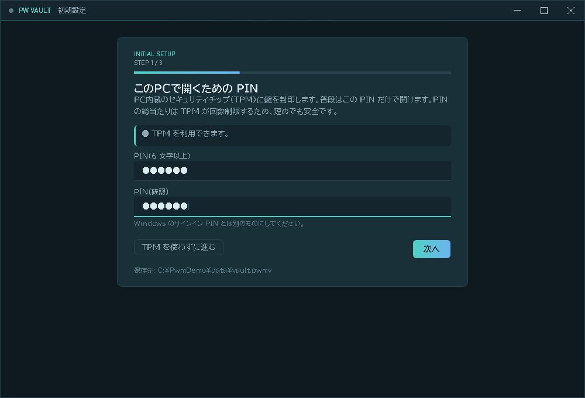
- 「PIN（6 文字以上）」に PIN を入力し、「PIN（確認）」にもう一度入力します。数字だけでなく英字も使えます。
- 次へ を押します。少し待つと（TPM に鍵を預ける処理）STEP 2 に進みます。
STEP 2 USB メモリの鍵ファイルとパスワード
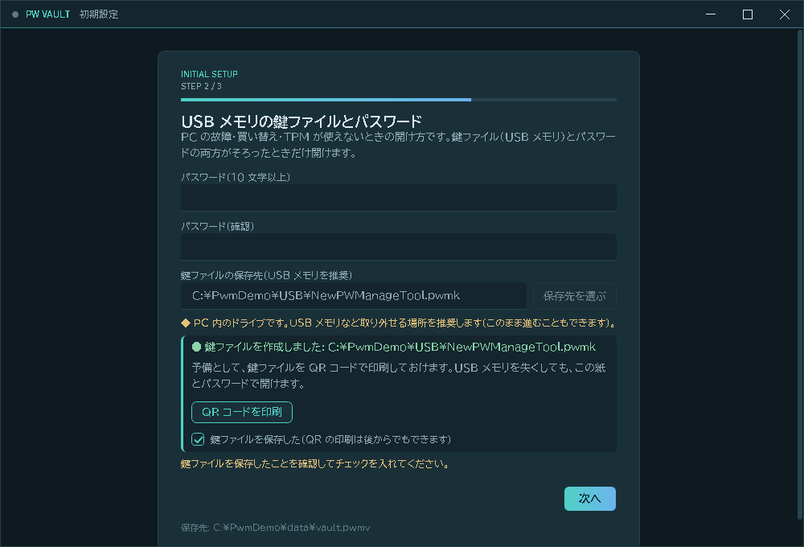
- 「パスワード（10 文字以上）」と「パスワード（確認）」を入力します。鍵ファイルと組み合わせて使うパスワードです。
- 保存先を選ぶ で、USB メモリの中を選びます（ファイル名の既定は
Secrypt.pwmk）。 - 次へ を押すと鍵ファイルが作られ、「● 鍵ファイルを作成しました」と表示されます。
- 予備として QR コードを印刷 しておくと、USB メモリを失くしても紙とパスワードで開けます（あとからでも印刷できます）。
- 「鍵ファイルを保存した」にチェックを入れ、次へ。
STEP 3 復旧コード（紙に書き写す）
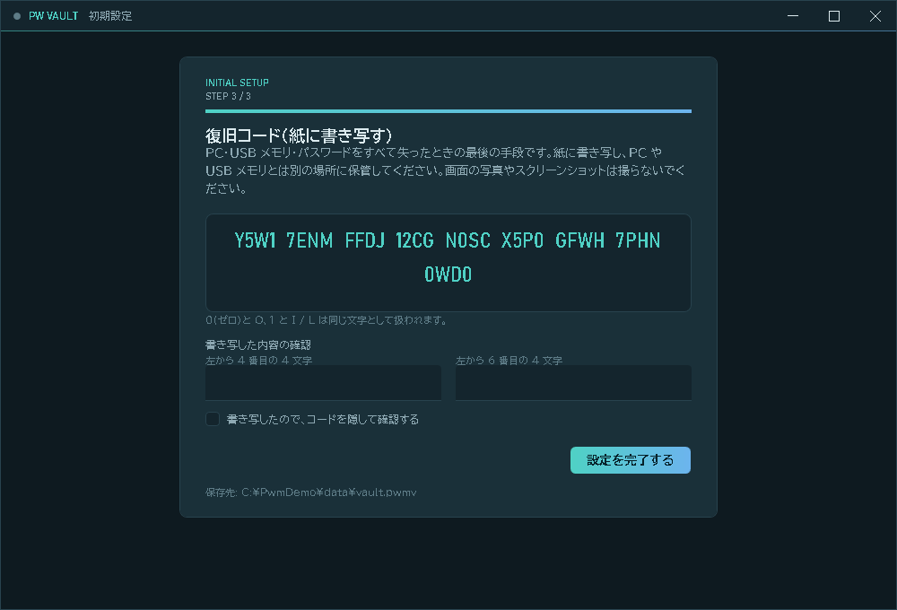
- 表示されたコードを紙に書き写します。
0（ゼロ）とO、1とI・Lは同じ文字として扱われるので、あいまいでも大丈夫です。 - 「書き写したので、コードを隠して確認する」にチェックを入れます。コードが隠れます。
- 画面の指示（例: 左から 4 番目と 6 番目）の組を、紙を見ながら入力します。
- 設定を完了する を押します。
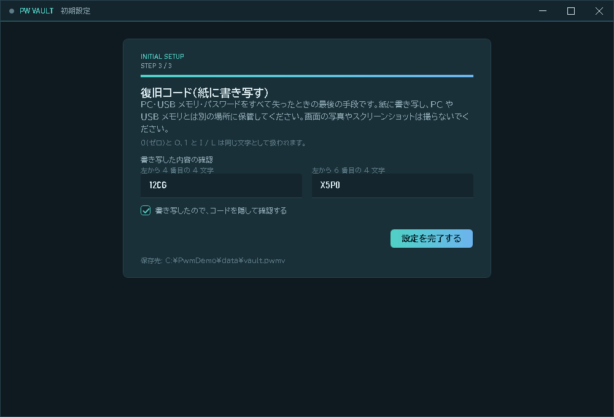
5. ブラウザから取り込む
Chrome や Edge に保存しているパスワードを、CSV ファイル経由でまとめて取り込めます。
ブラウザで CSV を書き出す
| Chrome | 設定 → 自動入力とパスワード → Google パスワード マネージャー → 設定 → エクスポート |
|---|---|
| Edge | 設定 → パスワード → 「…」 → パスワードのエクスポート |
取り込む
- 一覧画面の上の ブラウザから取り込む を押します。手順の説明が出ます。
- ファイルを選ぶ で、書き出した CSV を選びます。
- 件数の確認が出ます。取り込む を押します。
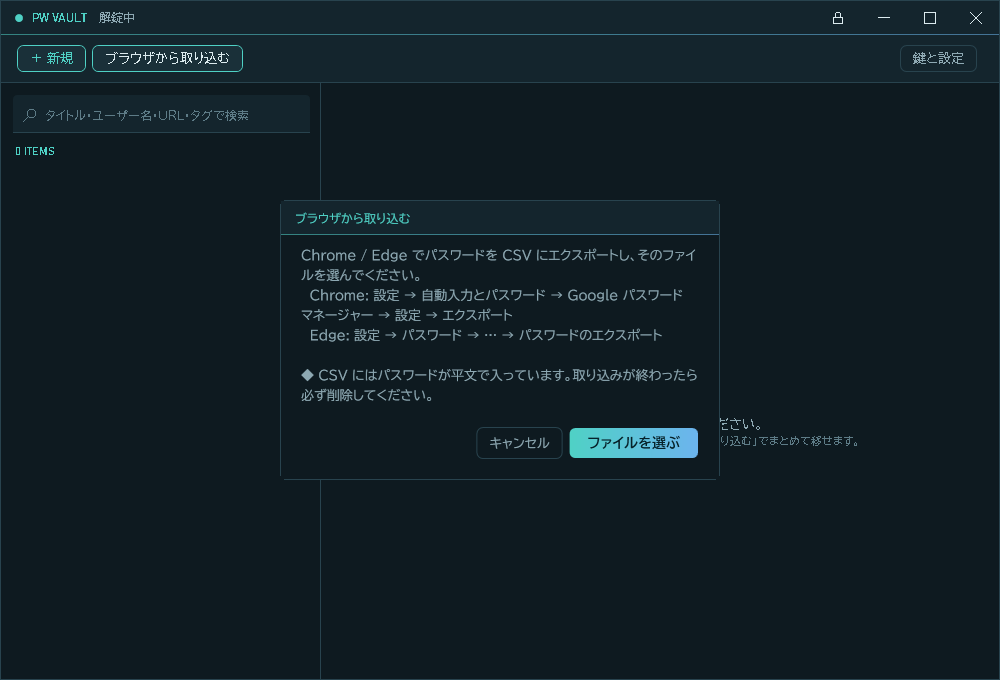
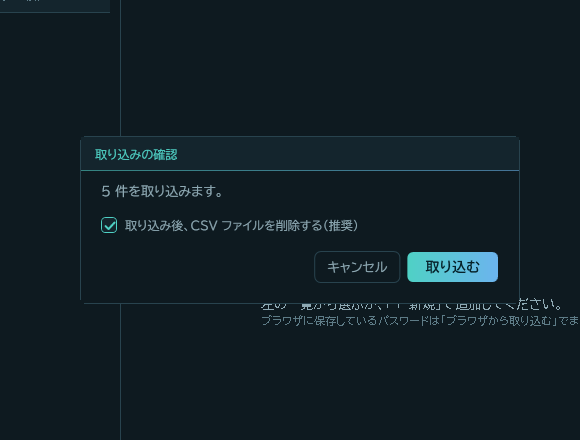
同じ URL とユーザー名の組み合わせがすでに登録されている行と、パスワードが空の行は取り込みません。取り込んだ項目にはタグ imported が付きます。
6. パスワードを使う・登録する
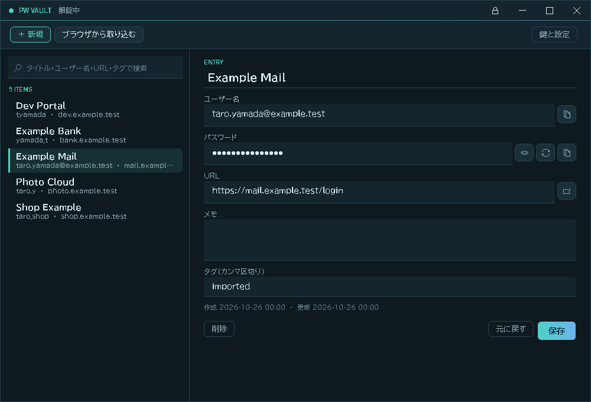
| ボタン | 働き |
|---|---|
| 📋（ユーザー名・パスワードの右） | クリップボードにコピー。20 秒後に自動で消えます（設定で変更可）。Win+V のクリップボード履歴やクラウド同期には残りません |
| 👁（目のアイコン） | パスワードの表示・伏せ字の切り替え。項目を開き直すと伏せ字に戻ります |
| ⟳（矢印のアイコン） | パスワード生成の欄を開く |
| ↗（URL の右） | 既定のブラウザで URL を開く（http / https のみ） |
| 保存 / 元に戻す / 削除 | 変更の確定 / 取り消し / 項目の削除（確認あり） |
検索してコピーする（いちばんよく使う操作）
- 検索欄（Ctrl+F）にサイト名などの一部を入力します。タイトル・ユーザー名・URL・タグから探します。
- 一覧で項目を選び、パスワードの 📋 を押します。
- ブラウザのログイン画面に貼り付け（Ctrl+V）ます。20 秒以内に貼り付けてください。
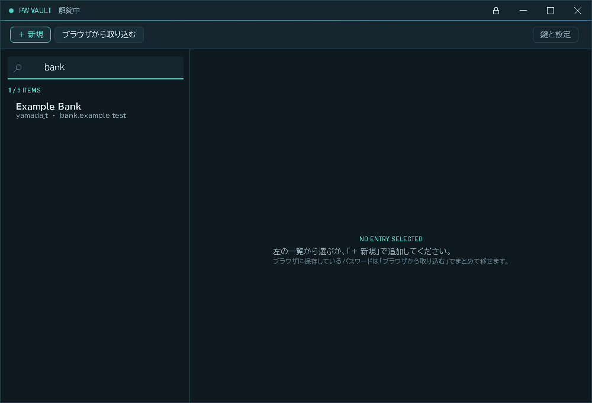
新しく登録する・強いパスワードを作る
- ＋ 新規（Ctrl+N）を押し、タイトル・ユーザー名・URL を入力します（タイトルか URL のどちらかは必須）。
- パスワード欄の ⟳ を押すと生成の欄が開きます。長さ（既定 20）と使う文字の種類を選び、生成して入力 を押します。強さの目安（ビット数）も表示されます。
- 保存（Ctrl+S）で確定します。
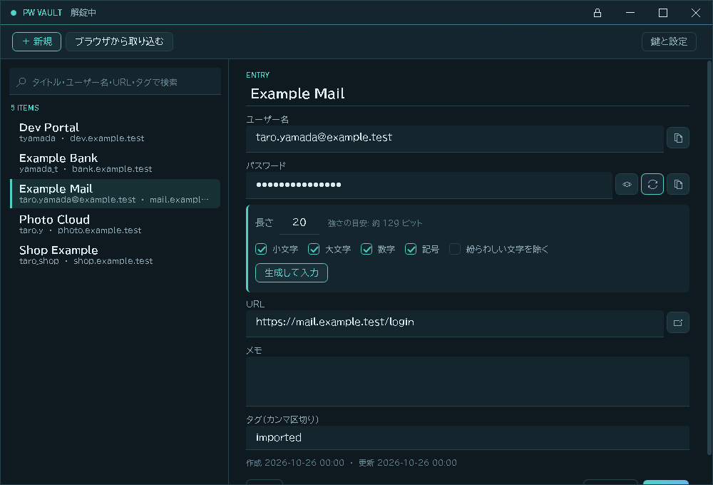
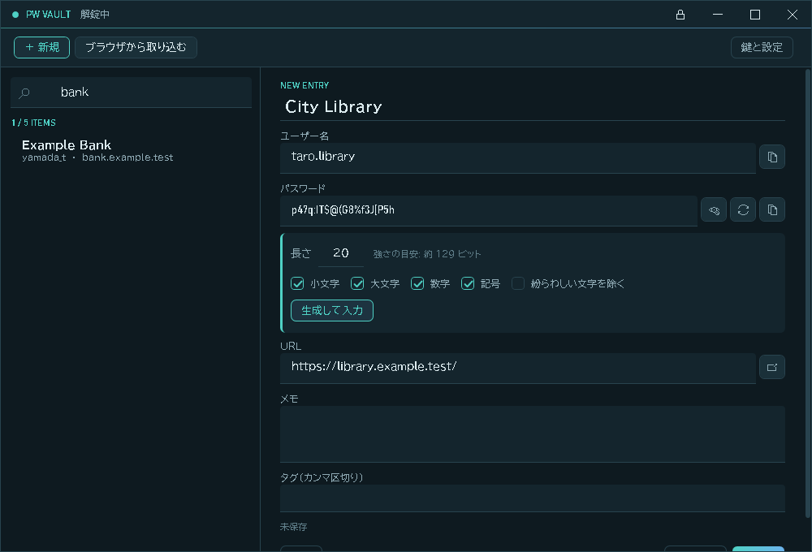
保存せずに別の項目へ移ったとき
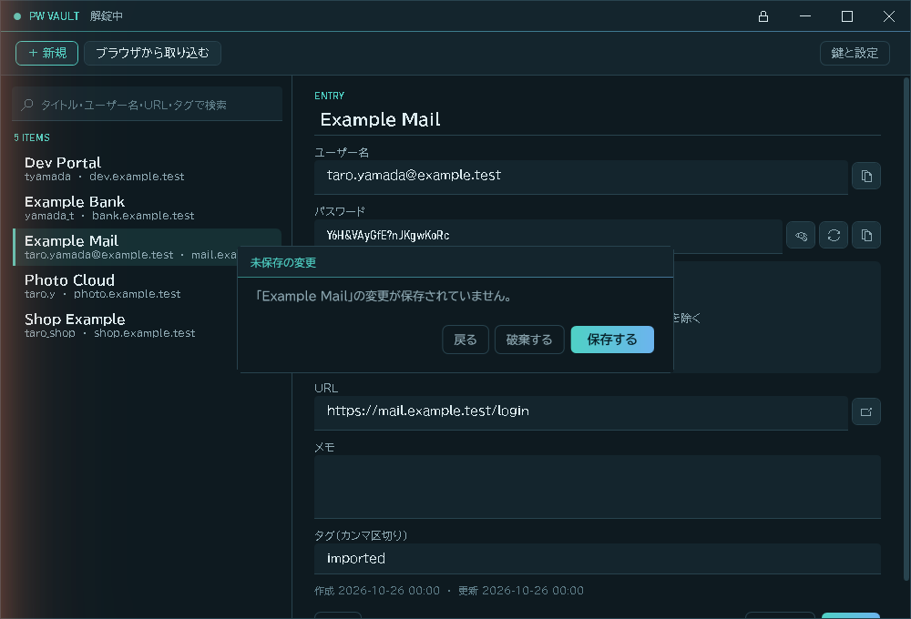
| 戻る | 何もせず元の項目に戻る（一覧の選択も元のまま） |
|---|---|
| 破棄する | 変更を捨てて、選んだ項目へ移る |
| 保存する | 保存してから、選んだ項目へ移る |
7. ロックと解錠
ロックされるとき
- タイトル帯の 🔒 ボタン、または Ctrl+L
- 何も操作しないまま 5 分たったとき（設定で 1〜120 分）
- Windows の画面ロック（Win+L）・スリープ・ユーザー切り替えのとき（すぐにロック）
- ウィンドウを閉じたとき（ロックしてから終了）
ロックすると、メモリ上の鍵と画面のパスワードを消し、アプリがコピーしたクリップボードの内容も消します。
解錠する
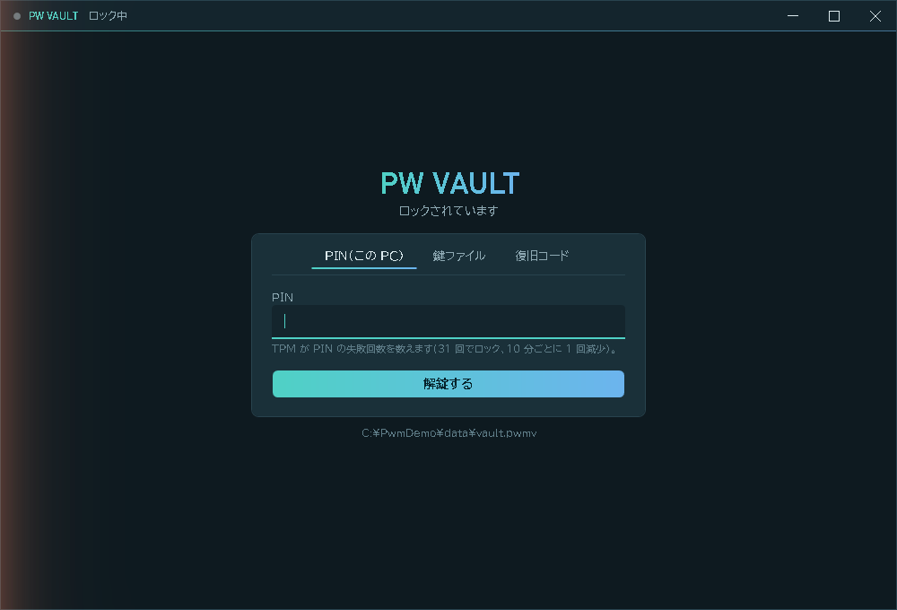
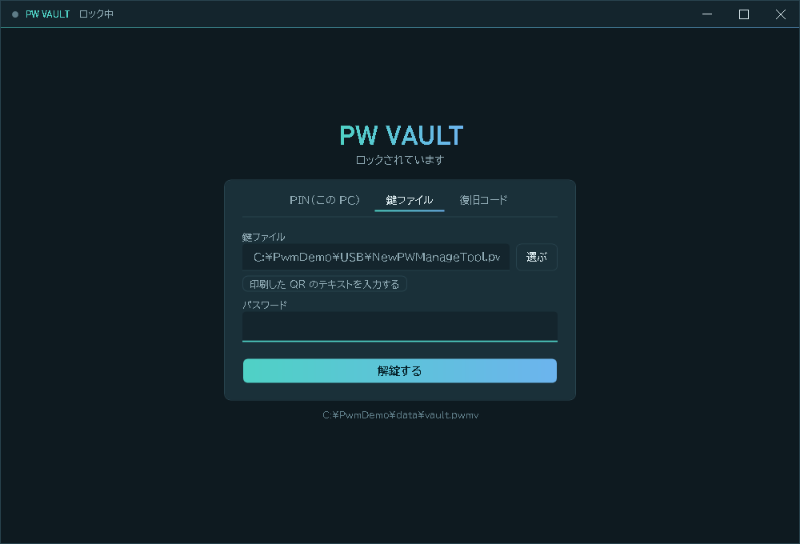
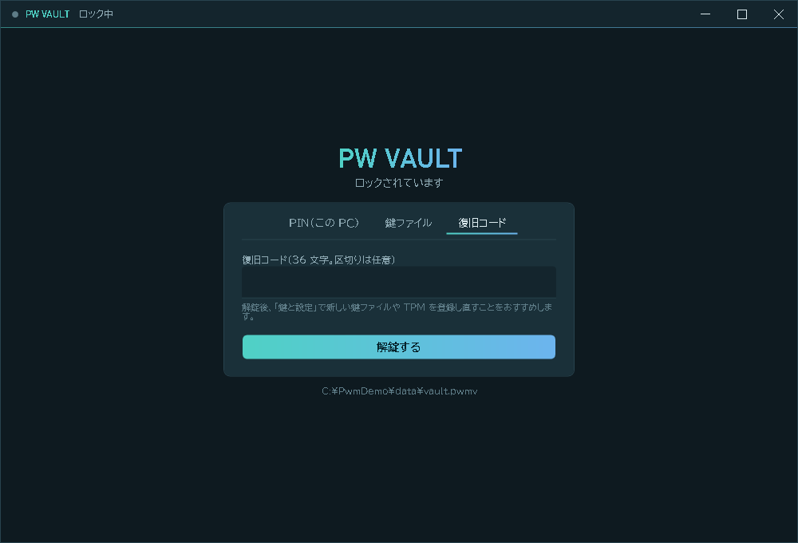
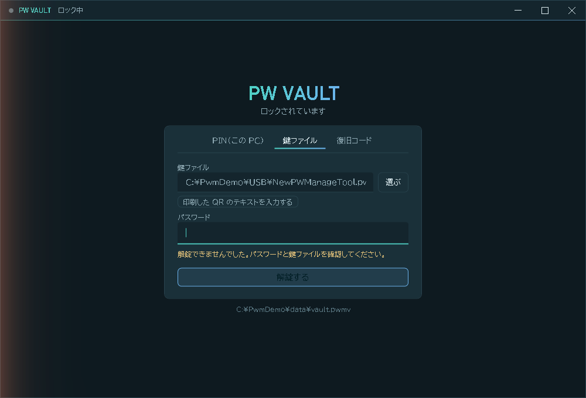
PWMK1: で始まる文字列）とパスワードを入力します。8. 鍵と設定
一覧画面の右上の 鍵と設定 を押すと開きます。
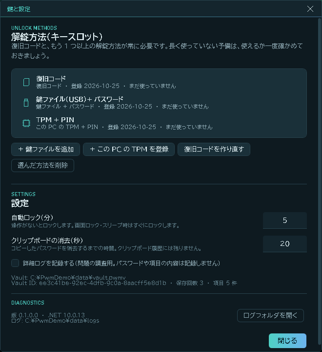
| 操作 | 使う場面と手順 |
|---|---|
| ＋ 鍵ファイルを追加 | USB メモリを失くした・予備をもう 1 本作りたいとき。パスワード（10 文字以上）→ 保存先 → 作成 → QR 印刷 |
| ＋ この PC の TPM を登録 | PC を買い替えた・TPM をクリアした・PIN を忘れたとき。新しい PIN を入力。既存の TPM の登録は置き換わります |
| 復旧コードを作り直す | 紙を失くした・人に見られたかもしれないとき。新しいコードを書き写して確認すると、古いコードは使えなくなります |
| 選んだ方法を削除 | 失くした鍵ファイルなどを無効にするとき。一覧で選んで削除。「復旧コード＋ほかに 1 つ以上」が残らなくなる削除はできません |
| 自動ロック（分） | 既定 5 分。1〜120 分 |
| クリップボードの消去（秒） | 既定 20 秒。5〜300 秒 |
| 詳細ログを記録する | 問題の調査用。オンにしてもパスワードや項目の内容は記録しません |
| ログフォルダを開く | 問題が起きたときにログを確認・共有するため |
設定はウィンドウを 閉じる ときに保存されます。各方法の「最終使用日」で、しばらく使っていない鍵がまだ使えるか（USB メモリが読めるか、紙の保管場所が分かるか）を定期的に確かめてください。
9. 困ったとき
| こんなとき | どうする |
|---|---|
| 日本語などを含む PIN・パスワードで、急に開けなくなった | 入力のしかたが変わっていないか確かめる（全角と半角、IME の変換方式、貼り付け元）。確実に開けるのは、別の方法（鍵ファイル・復旧コード）です。開いたあと、半角の英数字で PIN・パスワードを作り直すことをおすすめします |
| PIN を忘れた | 鍵ファイルか復旧コードで開き、この PC の TPM を登録 で新しい PIN を設定 |
| 「TPM がロックされています」 | しばらく待つ（失敗回数は時間で減ります）か、鍵ファイル・復旧コードで開く |
| PC を買い替えた・Windows を入れ直した | 保管ファイル（vault.pwmv）を新しい PC の %LOCALAPPDATA%\NewPWManageTool\ に置き、アプリをインストール。鍵ファイルか復旧コードで開き、TPM を登録し直す |
| USB メモリを失くした | PIN か復旧コードで開き、失くした鍵ファイルを 選んだ方法を削除 → 鍵ファイルを追加 で作り直す |
| 「この鍵ファイルは、この保管ファイル用ではありません」 | 別の保管ファイル用の鍵ファイルです。正しい鍵ファイルを選ぶ |
| 項目を誤って削除した・前の状態に戻したい | アプリは保存のたびに、保存する前の保管ファイルを自動でバックアップしています（同じフォルダの vault.pwmv.bak1〜.bak5。.bak1 が直前の保存の前、数字が大きいほど古い）。アプリを閉じ、今の vault.pwmv を別名（例: vault.pwmv.now）に変えてから、戻したい時点のバックアップを vault.pwmv という名前でコピーして開き直す。その時点より後に追加・変更した項目も元に戻るため、必要な項目は控えておく。バックアップの一覧と日時は診断ツールの pwm backups で確認できます |
| 保管ファイルが壊れた・改ざんされたと表示される | 上の「前の状態に戻したい」と同じ手順で、vault.pwmv.bak1 から順に開けるものを探す（元のファイルは別名で残しておく） |
| 「予期しないエラーが発生しました。ロックしました。」 | 「ログフォルダを開く」でログを確認。続けて使う場合は「続ける」→ 解錠し直す |
| 2 つ目のアプリが起動しない | 同じ保管ファイルを開くアプリは 1 つだけです。すでに開いているウィンドウが前面に出ます |
| スクリーンショットにアプリが写らない | 仕様です。パスワードが画面共有や録画に写らないよう、アプリの画面はキャプチャから除外しています |
診断ツール pwm
パスワードを入力せずに状態を調べられます。インストール先の cli\pwm.exe（-AddToPath を付けた場合は pwm だけで実行可）。
| コマンド | 表示する内容 |
|---|---|
pwm diag tpm | TPM が使えるか、失敗回数（ロックまでの残り） |
pwm diag vault | 保管ファイルの形式・保存回数・登録されている解錠方法 |
pwm backups | 世代バックアップの一覧 |
pwm logs --days 7 | 直近のエラー・警告の件数 |
pwm bench argon2 | 鍵の計算にかかる時間 |
10. アンインストール
次のどれかを実行します。
%LOCALAPPDATA%\Programs\Secrypt\uninstall.cmd （インストール先にあります）
setup.cmd -Uninstall （配布フォルダから）
scripts\install.cmd -Uninstall （ソースから）アプリ本体・ショートカット・PATH の登録を削除します。パスワードのデータ（%LOCALAPPDATA%\NewPWManageTool）は削除しません。完全に消したいときは、中身が不要なことを確かめてから、このフォルダを自分で削除してください。
付録 キー操作
| キー | 働き |
|---|---|
| Ctrl+F | 検索欄へ |
| Ctrl+N | 新規登録 |
| Ctrl+S | 保存 |
| Ctrl+L | ロック |
| ↑ ↓ Home End | 一覧の移動（未保存の変更があれば確認） |
| Enter | 解錠画面で解錠 |